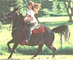
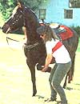
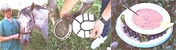

COUNTRY VET
Horses are born to run, but not as hard as you might imagine.
What warm-up procedure do you recommend for a 6-year old Morgan mare? We ride or drive her almost daily and with so much concern over exercise intolerance, we are willing to do what it takes to help her exercise property. Is there any set protocol for a horse this age, working about a half hour daily?
-Owen Grant
Knoxville, TN
Horses are naturally designed for quick bursts of energy to flee predators or escape fear. This fight-or-flight response in the wild need usually be sustained for only a few moments. However, today's horses are asked to perform for many hours at maximal energy requirements. Just like their human Olympic counterparts, an equine athlete needs to limber up and cool down properly. Here's some hints for a routine that really needs to be tailored to your horse's daily workload, feed intake, life stage, conformation, and other health problems. Warm-ups should be no more than 10-15 minutes long and will improve the efficiency of the muscles working at the same time it reduces risk of injury to ligaments, tendons, and joints. The cardiorespiratory system also profits by increasing its oxygen uptake and efficient use.
To maximize heavy upper muscle elasticity, try manual stretching. During the forelimb stretch, stand to the front and side of the animal and pick up the front leg by grasping it above the knee, and gently pull it forward. Pull the leg gently to the outside and across in front of the other forelimb. Pull the leg to the outside and then finally backward towards the hindlimbs. During the stretch of the hindlegs, grasp the leg just below the hock while standing next to the front shoulder of the animal, and pull forward slowly. The hindlimb may also be gently tugged out to the side and then directly backwards. These stretches should be held for 10-15 seconds in each direction. If the animal becomes uncomfortable, they should be stopped and attempted at a later date. These maneuvers are extremely helpful in adding flexibility and suppleness to the muscles of the shoulder, elbow, hip, and epaxial (back) muscles.
Making the animal reach down to the ground, high up in the air, or around to the side of its body for a favorite treat are what's known as "carrot stretches." These stretches are extremely useful for dressage animals and those doing tight circling maneuvers and will improve flexibility and tone in the neck and shoulder muscles.
In addition to all of the above stretches, walking can be done under saddle, in hand, or on a long line. Start slowly and increase gradually to a brisk pace. Easy trotting further improves oxygen uptake and cardiac output. These two exercises should be performed in the beginning of each workout before any further strenuous work. Trotting's symmetrical pace also makes it easy to pinpoint lameness before more difficult exercise worsens them beyond repair. Both these gaits are used in warm up to facilitate stretching of the distal limb muscles, tendons, and ligaments. Sidestepping and tight serpentine workouts at the walk are advocated by many horse folk as a method of not only "collecting" the animal but making sure back and neck muscles are ready for a further workout.
Our 4-year old Appaloosa mare had pads placed on her
front feet last year for a sole bruise on one foot. What do
you think about padding shod horses? Should we continue
to have her shoes padded?
-Maura Thompson
Odessa, TX
Massaging major muscle groups, specifically back and hip muscles, will improve range of motion and increase circulation to major body organs, such as the spleen and kidney, as well as increase circulation in the muscle bellies themselves. With firm pressure, use the heel of the hand to create a circular massaging motion over each muscle group. The horse will relax and lean into the pressure after a few go-rounds. Likewise, using a thick curry comb, followed by a brisk brushing, will also stimulate skin and superficial epidermal/dermal blood flow while removing sweat and dirt.
Whatever the warm-up, be sure to go slowly when conditioning the horse to any new exercise. Also, be sure to switch patterns of exercise frequently after a proper warm-up to avoid performance "burnout." Pads are often added to shoes if more than just applying a standard shoe to cover the bearing surface of the hoof wall is necessary, or for healing short-term problems such as sole abscesses, puncture wounds, bruises, corns, or severe inflammation of the third phalanx or navicular bone. These problems can cause a great deal of lay-up time and consequently, it may be advantageous to pad the shoe, encasing the entire bottom of the foot in a "protective" coating.
I use the term "protective" loosely however, because padding may have some adverse long-range effects that may outweigh its benefits. A full pad may reduce the chance of bruising the sensitive tissues and will reduce some concussions to the foot. However, the feet then never have access to the ground. The sole consequently can become very soft and vulnerable to injury and deep bruising. The hoof wall tends to lose its grip in the nails since the shoe now is farther from the wall proper. Without support from the ground surface, the sole begins to flatten and may even develop bacterial (thrush) or fungal growth on its surface or, worse yet, in hidden injuries due to moisture and dirt trapped under the pad.
While most horses do not require pads year round, a horse with laminitis, navicular disease, or one that is prone to bruising on heels or sole from genetically flattened feet or lax tendons may benefit from padded shoes. Unless your horse has one of these problems, I would suggest keeping the pads off. Turn out and regular exercise on appropriate supporting surfaces help strengthen and toughen feet and may provide an alternative to chronic padding. Try not to be overzealous with the hoof knife or rasp, so as to remove too much hoof yet leave behind a flat (vs. concave) sole. Your farrier will use appropriate caution to make sure sole and frog are well above ground level. Finally, formulas with phenol, formalin, or even straight Clorox precipitate and injure valuable sole, and may weaken the hoof wall if used on a regular basis in solutions or baths.
What concentration of iodine is needed in teat dips-should you require a certain percentage?
- Judith Greene
Rutland, VT
The cleaner an udder is when it's time to put on the teat cups, the lower the concentration of germicide needed to kill the bacteria that causes mastitis. A famous dairy veterinarian, now professor emeritus and a friend of mine, once told me in school that you should aim for three things in the udder-care department: clean, dry, and comfortable. If the udder hygiene program is up to speed, then the concentration of sanitizer can be low.
Research has indicated that 0.1 to 0.5 percent iodine dips are useful for premilking bacterial reduction. These same concentrations and up to 1.0 percent iodine were effective after milking. Just as important as the concentration of the dip, however, were things like its viscosity (which may change in weather extremes and will affect the amount of dip that adheres to each teat), addition of any skin conditioners (which ultimately will affect how often the dip is used) and its residue potential (probably a bigger problem with pre-milking dips).
Try to keep the teats clean with warm water and dried properly (individual paper toweling), especially after milking, to avoid using dips as much as possible and to strive for the lowest concentration germicide in the dip. Phone several companies before purchasing to see if their dips have been tested both in controlled research environments and in the field, and have been shown to be not only efficacious but safe to the udder as well.
We have several cows lame with what looks to be symptoms of founder. We don't have much mastitis. Could this be feed related? -Richard Newcomb
Lebanon, PA
A balanced dairy ration is made up of proper amounts of fiber, protein, energy, minerals, and vitamins, with the most important ingredients being the first three listed. The fiber comes from forage or roughage (hay, haylage, or silage). The protein usually comes from high protein by-products or forages, such as oil-seed meals or high calcium hays. The energy is starch or grain related, mostly corn in the eastern United States. However, barley and other grains may also be fed.
Problems in dairy cows often occur when different proportions of fiber, protein, and energy become out of balance in their feed rations. A common occurrence is feeding too much energy in the form of grain, which can lead to ruminal acidosis, laminitis, and displaced abomassums. Compensation for this increased grain usually comes in the form of the farmer increasing haylage or silage. The unfortunate problem with this solution is that the silage is usually corn related, which again (depending on the growing season and whether it's ground or shelled), may also contain more relative grain than the original energy source.
First try increasing dry matter with grass haylage vs. silage. Try replacing some or all of the ground corn with another grain such as soybean, or a different type of corn (less concentrated). The carbohydrate (starch) is often the ingredient that if slightly out of balance may create the most trouble. Nutritional analysis of the silage currently being fed by your veterinarian or extension office may help you formulate a new ration balanced for energy, protein, and fiber-and custom made for your wallet and your herd's health.
|
 Padding your horse's shoes can help sore feet heal, but keep in mind this ""protection"" keeps the foot tender and vulnerable. |
 |
 |